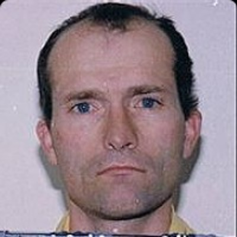

🔎 Hadden Clark: The Cross-Dressing Cannibal | Maryland Serial Killer 🔪 Hadden Irving Clark is a convicted American murderer and suspected serial killer known by the moniker "The Cross-Dressing Cannibal." Currently serving two 30-year sentences, Clark was convicted for the 1986 murder of 6-year-old Michele Dorr in Silver Spring, Maryland, and the 1992 murder of 23-year-old Harvard graduate Laura Houghteling in Bethesda. Diagnosed with paranoid schizophrenia and discharged from the U.S. Navy, Clark worked various menial jobs, including chef and gardener. His confessions, sometimes delivered while wearing a woman's wig or claiming a female alter-ego named "Kristen Bluefin," led police to a burial site for Dorr 14 years after the crime. Authorities later discovered a plastic bucket containing over 200 pieces of jewelry that Clark claimed were "trophies" from his victims. Though convicted of two murders, Clark has chillingly confessed to dozens of others, including the 1974 cold case known as the "Lady of the Dunes."
⚠️ Viewer discretion advised. Contains disturbing content based on real events.
